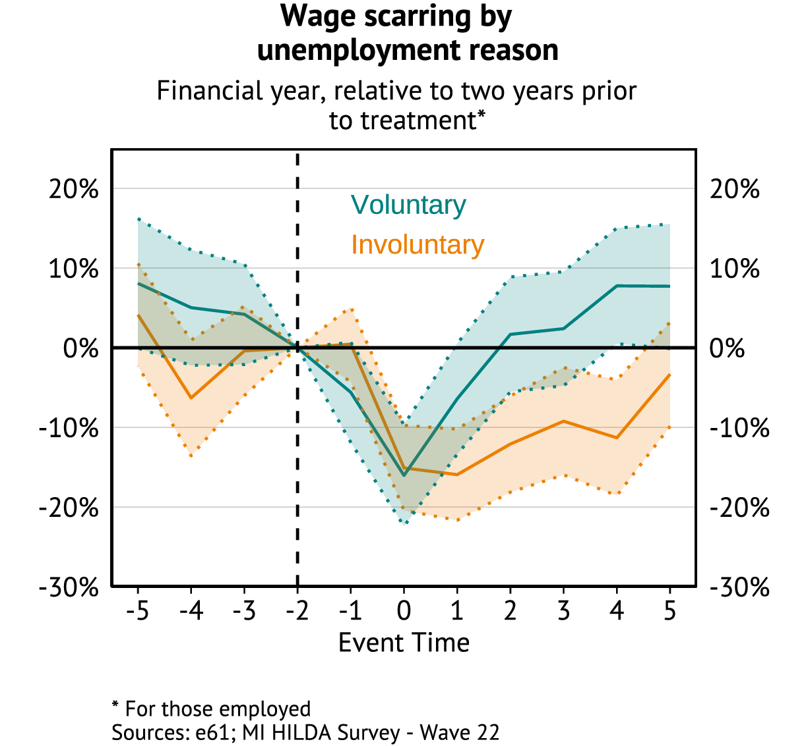

| Column1 | Column2 | Column3 |
|---|---|---|
| Value 1 | Value 2 | Value 3 |
| Value 4 | Value 5 | Value 6 |
| Value 7 | Value 8 | Value 9 |
Is the Australian Benefit System fit for purpose?
Summary
XXX.
Introduction
The social safety net in Australia has remained unchanged in terms of its broad principles since its inception in the 1947 Social Security Act (cite). In broad terms the social security system intends to XXX
Two areas of reform over the past thirty years have been with regards to an increased emphasis on work through mutual obligations and the growth in private employment services, alongside a desire for increased system simplicity following the two McClure reports (cite).
In order to evaluate whether a significantly different system would be preferable, this document outlines the hypothetical design of varying income support systems, the policy differences these systems involve, and the international difference in these systems.
We can then use Australian and international evidence to form a view on the trade-offs inherent in a significant reform to the Australian safety net - and where more work is necessary.
Hypothetical design
Insurance or a minimum floor
XXX [UI v UA v UBI]
The income unit
XXX
The Iron Triangle
XXX
Rationale for varying systems
XXX
International system comparison
Differences in replacement rates
XXX
Differences in non-take-up conditions
XXX
Differences in coverage
XXX
Differences in outcomes
Job finding and unemployment
XX
Wage scarring
XX

Evidence on system choices
The implications of mutual obligations
XXX
The implications of the payment rate
XXX
The implications of benefit exhaustion/tapering
XXX
The effect of a UBI
A UBI differs from the Australian system in the following ways:
XXX
XXX
XXX
:
[1] 2XXX
[1] 4The echo: false option disables the printing of code (only output is displayed).